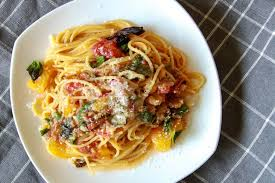

One-Pot Spaghetti Recipe

Description
Here’s a One-Pot Spaghetti recipe that’s quick,
cozy, and requires minimal cleanup.
Ingredients
- 300 g (10–11 oz) dry spaghetti
- 2 tbsp olive oil
- 1 onion, finely chopped
- 3 cloves garlic, minced
- 1 can (400 g / 14 oz) diced tomatoes
- 3 cups vegetable or chicken broth
- 1 tsp dried oregano
- ½ tsp chili flakes (optional)
- Salt & black pepper, to taste
- 1 handful fresh basil (or parsley), chopped
- Parmesan cheese, for serving (optional)
Instructions
- In a large pot or deep pan, heat olive oil over medium heat. Add onion and cook until soft (3–4 minutes). Add garlic and cook another 30 seconds until fragrant.
- Pour in diced tomatoes, broth, oregano, chili flakes, salt, and pepper. Stir to combine. Add the dry spaghetti, making sure it’s mostly submerged in liquid.
- Bring to a boil, then reduce heat to medium-low. Cook uncovered, stirring often so pasta doesn’t stick together, for about 12–14 minutes or until pasta is al dente and liquid has mostly absorbed (add a splash of water if it dries too quickly).
- Stir in fresh basil or parsley. Taste and adjust seasoning.
- Plate hot and top with parmesan if desired.
Home